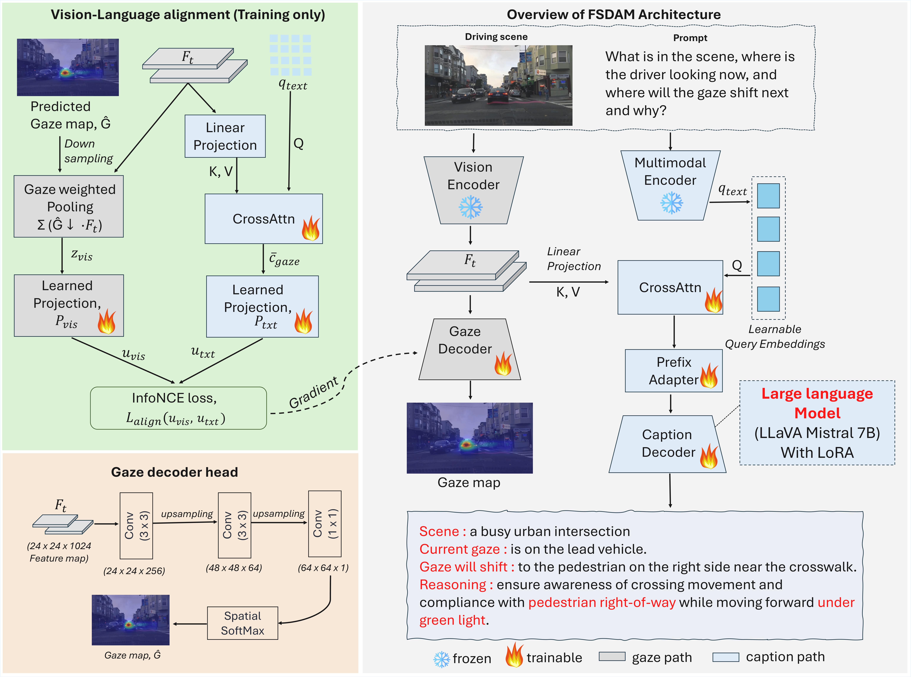
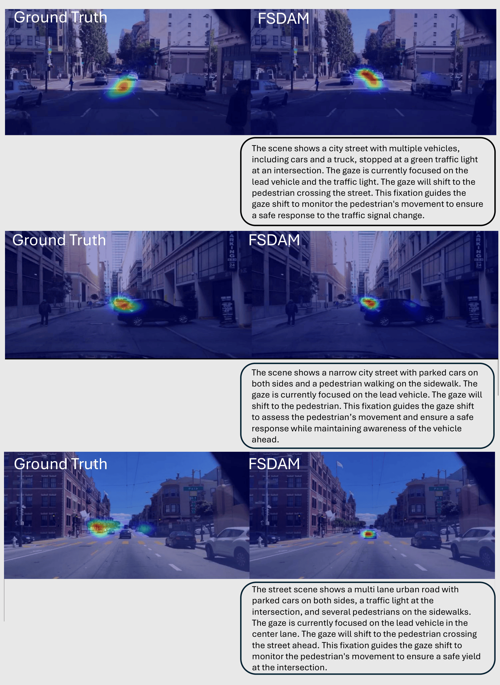
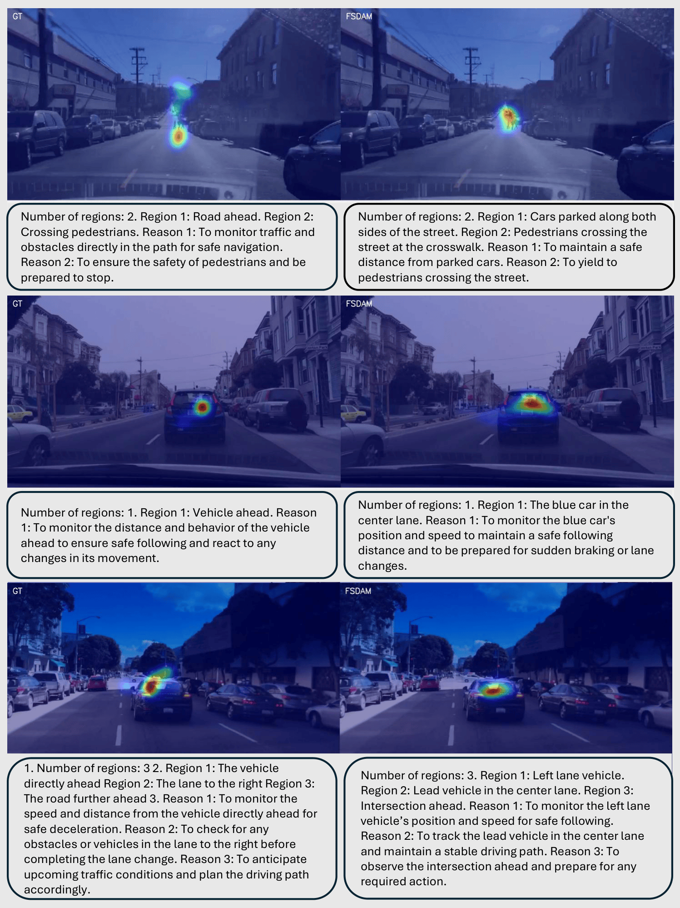
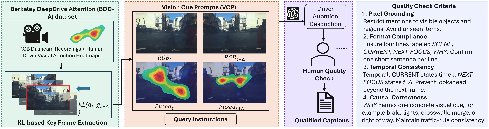
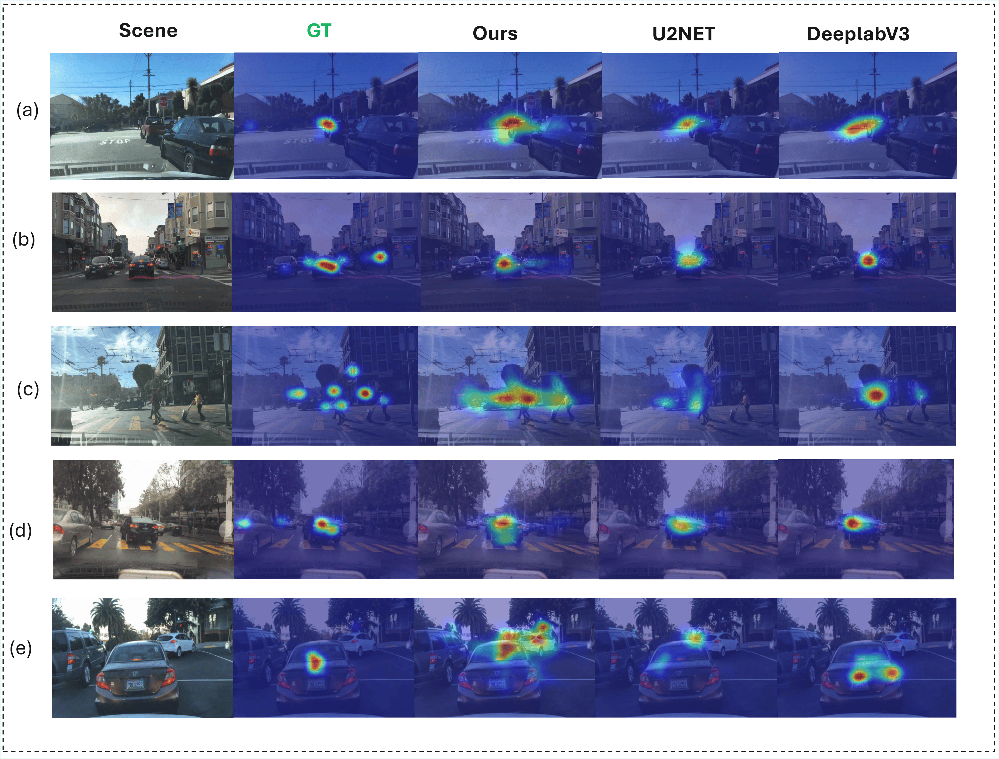

FSDAM: Few-Shot Driving Attention Modeling via Vision-Language Coupling
Abstract
Understanding not only where drivers look but also why their attention shifts is essential for interpretable human-AI collaboration in autonomous driving. Driver attention is not purely perceptual but semantically structured. Thus attention shifts can be learned through minimal semantic supervision rather than dense large-scale annotation. We present FSDAM (Few-Shot Driver Attention Modeling), a framework that achieves joint spatial attention prediction and structured explanation generation using 90 annotated examples. Our key insight is to decompose attention into an explicit reasoning representation, including scene context, current focus, anticipated next focus, and causal explanation, and to learn next-focus anticipation through minimal-pair supervision. To address task conflict and large sample requirements of existing models, and to mitigate task interference under limited data, we introduce a novel dual-pathway architecture in which separate modules handle spatial prediction and caption generation. In addition, we use a training-only vision-language alignment mechanism that injects semantic priors into spatial learning without increasing inference complexity. Despite extreme data scarcity, FSDAM achieves competitive performance in gaze prediction and generates coherent, context-aware structured reasoning for improved interpretability. The model further demonstrates strong zero-shot generalization across multiple driving benchmarks.
Key Contributions
- Introduces a few-shot framework for joint driver gaze prediction and structured reasoning.
- Uses an explicit reasoning decomposition with scene context, current focus, next focus, and causal explanation.
- Proposes a dual-pathway architecture to reduce task interference under limited supervision.
- Incorporates a training-only vision-language alignment mechanism to inject semantic priors without increasing inference cost.
- Demonstrates strong zero-shot generalization across multiple driving benchmarks.
Method Overview

FSDAM separates spatial attention prediction and language-based reasoning into two cooperative pathways. A training-only vision-language alignment module injects semantic priors into the spatial branch, while the reasoning branch produces structured attention explanations grounded in scene context and anticipated focus transitions.
Qualitative Results

Qualitative gaze prediction and reasoning examples on BDDA.

Zero-shot transfer examples on W³DA-style evaluation.

Few-shot dataset curation pipeline with minimal-pair supervision.

Structured attention reasoning with scene context, current focus, next focus, and causal explanation.
BibTeX
@article{hamid2025fsdam,
title={FSDAM: Few-Shot Driving Attention Modeling via Vision-Language Coupling},
author={Hamid, Kaiser and Cui, Can and Akbar, Khandakar Ashrafi and Wang, Ziran and Liang, Nade},
journal={arXiv preprint},
year={2025},
url={https://github.com/fsdam-vlc/fsdam}
}